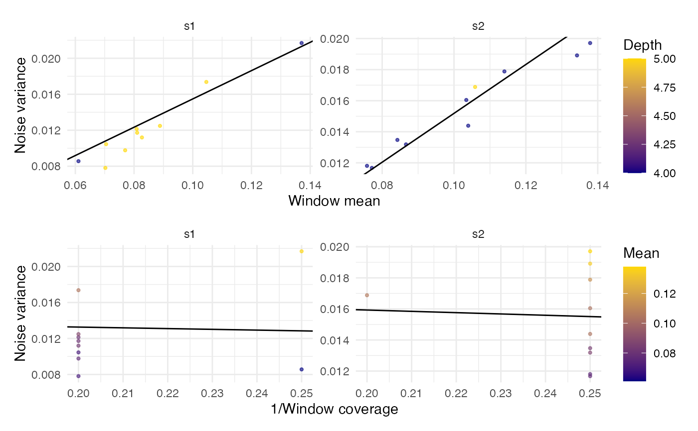

Estimate a background noise model via a noise ~ f(methylation, coverage) fit from randomly sampled windows. Estimations are performed on one of the following two sets of regions:
sample
nWindowswindows of widthwindowSizeacross the chromosomes inchromosomeLengthsuse a user‑supplied set of genomic windows (
windows)
For every window the function retrieves per‑position summary data with
readModBam(level = "summary"), runs .estimateSNRvec() and
regresses the resulting noise variances on window means and coverage.
Usage
estimateNoiseParsWindows(
bamfiles,
modbase,
chromosomeLengths = NULL,
windowSize = 500L,
nWindows = 500L,
windows = NULL,
k = 2L,
minCov = 3L,
mean_probs = c(0.05, 0.99),
depth_probs = c(0.01, 0.95),
noise_ratio_probs = c(0.01, 0.7),
dcut_min = 10,
na_rm = TRUE,
return_data = FALSE,
BPPARAM = MulticoreParam(4L, RNGseed = 42L)
)Arguments
- bamfiles
Character vector with one or several modBam file names. When several files are supplied, the noise model is fitted independently for each sample. The final coefficients returned are the arithmetic mean of the per-sample coefficient vectors.
- modbase
Character scalar giving the modified base (as understood by
readModBam()).- chromosomeLengths
Named numeric vector with chromosome sizes (e.g.
seqlengths(BSgenome)). Ignored whenwindowsis supplied.- windowSize
Integer scalar with the width of the windows in base pairs. Ignored when
windowsis supplied.- nWindows
Integer scalar defining how many windows to sample in total. These will be distributed uniformly in the chromosomes defined in
chromosomeLengths. Ignored whenwindowsis supplied.- windows
A
GRangesobject with explicit windows to use. When notNULL, the function uses these windows for estimation and the argumentschromosomeLengths,windowSizeandnWindowsare ignored.- k
Integer scalar (default 2L). Two measurements are considered “adjacent” if they are at most
kbases apart when estimating the noise.- minCov
Integer scalar giving the lowest acceptable coverage in order to keep a position. A value greater than one is recommended to remove spurious positions.
- mean_probs, depth_probs, noise_ratio_probs, dcut_min, na_rm
Advanced filtering parameters controlling thresholds used to filter windows; see Filtering parameters below.
- return_data
= FALSE, Logical scalar. If
TRUE, include in the output data that can be used to draw a diagnostic scatter plot with the fit.- BPPARAM
A
BiocParallelParamobject (set theRNGseedargument for reproducibility in sampling).
Value
A list with components:
coefficientsNamed numeric vector
c(intercept = a, slopeMean = b, slopeInvDepth = c)giving the fitted background noise model.data(Optional) Only present if
return_data = TRUE. Adata.framewith columnsmean,noise,depth, andsample, containing per-window statistics useful for diagnostics or plotting.
The returned list also carries the attribute
"NoiseFilterParam" that records the filtering thresholds used
during model fitting.
Filtering parameters
mean_probsNumeric length-2. Lower/upper quantiles for window mean methylation. Default
c(0.05, 0.99).depth_probsNumeric length-2. Lower/upper quantiles for window depth coverage. Default
c(0.01, 0.95).noise_ratio_probsNumeric length-2. Lower/upper quantiles for noise-to-mean ratio. Default
c(0.01, 0.70). Upper cutoff typically 0.60–0.80 to ensure removal of windows with excess variance.dcut_minNumeric scalar. Minimum allowed depth cutoff. Default
10.na_rmLogical. Remove
NAs when computing quantiles? DefaultTRUE.
See also
plotNoisePars for plotting the fitted model(s).
Examples
library(GenomicRanges)
modbamfiles <- system.file("extdata",
c("6mA_1_10reads.bam", "6mA_2_10reads.bam"),
package = "footprintR")
gr0 <- GRanges("chr1", IRanges(6920000, 6950000))
gr_tiles <- unlist(tile(gr0, width = 500))
gr_tiles
#> GRanges object with 61 ranges and 0 metadata columns:
#> seqnames ranges strand
#> <Rle> <IRanges> <Rle>
#> [1] chr1 6920000-6920490 *
#> [2] chr1 6920491-6920982 *
#> [3] chr1 6920983-6921474 *
#> [4] chr1 6921475-6921966 *
#> [5] chr1 6921967-6922458 *
#> ... ... ... ...
#> [57] chr1 6947541-6948032 *
#> [58] chr1 6948033-6948524 *
#> [59] chr1 6948525-6949016 *
#> [60] chr1 6949017-6949508 *
#> [61] chr1 6949509-6950000 *
#> -------
#> seqinfo: 1 sequence from an unspecified genome; no seqlengths
noisePars <- estimateNoiseParsWindows(modbamfiles, modbase = "a",
windows = gr_tiles, return_data = TRUE,
BPPARAM = BiocParallel::SerialParam())
noisePars
#> $coefficients
#> intercept slopeMean slopeInvDepth
#> 0.001517852 0.157298641 -0.008419490
#>
#> $data
#> mean noise depth sample
#> 22 0.06107100 0.008560390 4 s1
#> 25 0.07048260 0.010452485 5 s1
#> 28 0.10462287 0.017365619 5 s1
#> 29 0.08268551 0.011197757 5 s1
#> 30 0.07697368 0.009770557 5 s1
#> 33 0.07023026 0.007812621 5 s1
#> 34 0.08105802 0.011720655 5 s1
#> 35 0.08089701 0.012135395 5 s1
#> 36 0.08882784 0.012484969 5 s1
#> 38 0.13707317 0.021690712 4 s1
#> 81 0.13422819 0.018914093 4 s2
#> 83 0.11401925 0.017882577 4 s2
#> 84 0.07578046 0.011804339 4 s2
#> 85 0.08663311 0.013186314 4 s2
#> 88 0.10395062 0.014388889 4 s2
#> 91 0.10586623 0.016880873 5 s2
#> 93 0.08424036 0.013473363 4 s2
#> 95 0.10341297 0.016044504 4 s2
#> 96 0.07713178 0.011672481 4 s2
#> 98 0.13787879 0.019710248 4 s2
#>
#> attr(,"NoiseFilterParam")
#> attr(,"NoiseFilterParam")$mean_probs
#> [1] 0.05 0.99
#>
#> attr(,"NoiseFilterParam")$depth_probs
#> [1] 0.01 0.95
#>
#> attr(,"NoiseFilterParam")$noise_ratio_probs
#> [1] 0.01 0.70
#>
#> attr(,"NoiseFilterParam")$dcut_min
#> [1] 10
#>
#> attr(,"NoiseFilterParam")$na.rm
#> [1] TRUE
#>
plotNoisePars(noisePars)
